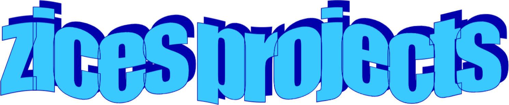

Moment
A private, temporary chat room that runs peer-to-peer in the browser.

Hey! I am Zices. I build software and experiment with AI and the web. This is where I keep the things I’m working on, document what I learn, and occasionally release something useful.
A private, temporary chat room that runs peer-to-peer in the browser.
A Python library that blocks unsafe Cypher queries before execution.
A JavaScript library for interactive charts and tables, built on Plotly.js and Tabulator.